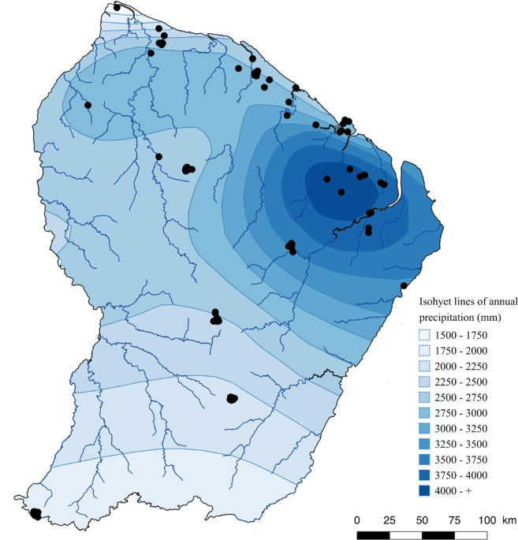
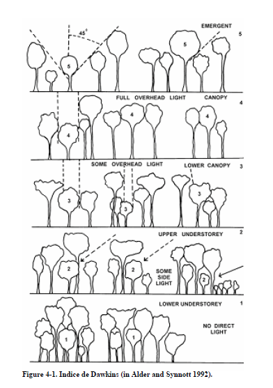

Chapter 5 Sampling
5.1 Habitats
Two main forest habitats are present in French Guiana, terra firme (high clay content and high water drainage) and seasonally flooded forests (nutrient rich soils and at least 3 months of annual flooding) (INSERER BIBLIO Ferry, 2010). The water table is never observed to descend below 60 cm depth and remains at the soil surface for at least two consecutive months each year (Baraloto et al., 2007; Ferry et al., 2010). During the field campaigns, we ensure that all trees sampled correspond to the correct habitat. In this case, any errors of habitat classification on the maps are being rectified.
The habitat classification of the tree species are based on all the past project achieved.
5.1.1 Hydrological indexes
Topographic variables are strong proxies for soil hydrology, which correlates with a combination of physico-chemical properties. A new hydrological index that accounts for both variations in climate and soil / topography across sites by combining the concept of MCWD with the one of Relative Extractable Water (e.g. Wagner et al. 2011) or Plant Available Water capacity (Nepstad et al. 2004, Ouédraogo et al. 2016). For Paracou, there is the topography classification established by Allié, Pélissier et al., 2015. Sylvain: The topographic wetness index (𝑇𝑊𝐼), identifies water accumulation areas. TWI was derived from 185 a 1-m resolution digital elevation model built based on data from a LiDAR campaign done in 186 2015 using SAGA-GIS (Conrad et al. 2015).
5.1.2 How do we define seasonally flooded soils?
On maps, pixels located at an altitude difference of less than 2 m from the altitude of the nearest surface run-off of the same catchment area. pixels situés à moins de 2m de dénivelé du plus proche écoulement de surface appartenant au même bassin versant. Surface run-off corresponds to pixels receiving the waterflow of at least 75 pixels upstream. Everything is being calculated from the SRTM 30 m (after adjusting the basin area with fillings.)
Gaelle information:
- utilisation couche sig onf
- critere pente (inf 20° = BF, pente moins forte espece de lissage avec bc d’arbres en BF, durcissement des criteres, affiner et bien tomber dans du BF) comment: SRTM pente 20° à 30m ne correspond pas n’ont plus à la pente sur le terrain, il y a une imprecision. but again in natura we make sure the tree is really in the corresponding habitat.
- distance à la crique (inf 50m) (marginale)
The classification in the waterlogged habitat may be loose and not as precise as for the terra firme, but it does not impact the sampling. As we mentioned above, in natura we assess if the tree is really in a waterlogegd habitat or not.
5.2 Sites
Permanent forest plots of the Guyafor network monitor since 1970 (Bafog, Paracou) individual tree growth and mortality in order to understand the different drivers of forest dynamics, including climate and disturbance. The network coves > 235 ha of tropical forest on 12 experimental sites. They are co-managed by the Cirad, CNRS and ONF institutes. METRADICA leaf samplings took place in the control plots.

Guyafor stations for tropical forest monitoring
Paracou : 9 of these permanent forest plots were subjected to 3 different forest exploitation treatments. Out of 9, 3 plots served as control plots. In 1992, 3 additional biodiversity / control plots of 6.25 ha in size and one 25 ha plot were established. Within these plots all trees with a diameter at breast height (DBH) above 10 cm were mapped. Species richness at Paracou ranges between 150 and 200 species per hectare. Since the establishment of the permanent forest plots, tree inventories take place at Paracou, recording tree status (alive or dead) and the DBH to the nearest 0.5 cm. Samplings were done in plots 6, 11, 13, 14, 15, and 16 from the 23/10/2020-7/12/2020 and from 13/09/2021- 17/09/2021. 244 trees sampled but 240 individuals with values. Lost 4 individuals (bota error usually)
Bafog: 5 permanent plots monitored of the ONF institute. Samplings were done in plots 2, 3, 4, and 5 and off plots from the 1st to 16th of March 2021.
Est: Samplings were done in plots KawGuyafor (1 ha) and Trésor from the 4th to 23rd of October 2021. Some trees were also sampled outside the plots.
The three sites were chosen in order to sample species along the rainfall gradient.

Rainfall gradient in French Guyana
5.3 Species
5.3.1 Indicator Species Analysis
We explored the degree of habitat preference using Indicator Species Analysis (Dufrene & Legendre 1997). It takes account of both relative abundance and relative frequencies of each species across the two main habitats in French Guiana, seasonally flooded forest and Terra firme forests.
- Generalist: IndVal ≠ 0 in the habitats (pVal>0.08 )
- Specialists: IndVal > 0.24 in one habitat (pVal<0.08)
Species with high IndVals means that the species prefers the habitat (but not exclusive, hence the word preference), but are also a high probability of being sampled in the given habitat.
Our analysis identified 9 generalist taxa, 8 SFF specialist taxa and 7 terra firme specialist taxa.
5.3.2 More details about IndVal
IndVal used by other projects (ex. INSERER BIBLIO TerSteege et al 2013). The relative abundance and the relative frequency must be combined by multiplication because they represent independent information about the species distribution. X100 for a percentage. The index is max when all individuals of a species are found in a single group of sites or when the species occurs in all sites of that group. The statistical significance of the species indicator values is evaluated using a randominization procedure. Significance of habitat association was estimated by a Monte Carlo procedure that reassigns species densities and frequencies to habitats 1000 times. It therefore gives an ecological meaning as it compares the typologies.
Other indicators:
- Contrary to TWINSPAN, this indicator index for a given species is independent of other species relative abundances and there is no need for pseudospecies
- Species richness (sensitive to several factors)
- Oliviera species association to the topographic and edaphic gradient : weighted the HAND or P concentration of the plot by the abundance of the species in the plot. Divided by the number of individuals of the species in all plots.
5.3.3 Chosen species
Our analysis identified 9 generalist taxa, 8 SFF specialist taxa and 7 terra firme specialist taxa.
| Family | Genus | Species | Type | Paracou | FTH | ParacouTotal | Bafog | Kaw |
|---|---|---|---|---|---|---|---|---|
| Fabaceae | Bocoa | prouacensis | Generalists | 15 | NA | 15 | 10 | 3 |
| Sapotaceae | Chrysophyllum | prieurii | Generalists | 12 | 5 | 17 | 11 | 1 |
| Euphorbiaceae | Conceveiba | guianensis | Generalists | 18 | 2 | 20 | 16 | 0 |
| Lecythidaceae | Eschweilera | coriacea | Generalists | 20 | NA | 20 | 19 | 10 |
| Chrysobalanaceae | Hymenopus | heteromorphus | Generalists | 20 | NA | 20 | 14 | 8 |
| Bignoniaceae | Jacaranda | copaia | Generalists | 18 | 2 | 20 | 12 | 15 |
| Burseraceae | Protium | stevensonii | Generalists | 4 | 8 | 12 | 11 | 1 |
| Fabaceae | Tachigali | melinonii | Generalists | 15 | 1 | 16 | 13 | 13 |
| Myristicaceae | Virola | michelii | Generalists | 6 | 5 | 11 | 16 | 6 |
| Meliaceae | Carapa | surinamensis | SFF specialists | 10 | NA | 10 | 1 | 10 |
| Fabaceae | Eperua | falcata | SFF specialists | 11 | NA | 11 | 0 | 10 |
| Myristicaceae | Iryanthera | hostmannii | SFF specialists | 9 | NA | 9 | 9 | 10 |
| Salicacea | Laetia | procera | SFF specialists | 8 | 1 | 9 | 10 | 10 |
| Burseraceae | Protium | opcaum | SFF specialists | 10 | NA | 10 | 0 | 10 |
| Fabaceae | Pterocarpus | officinalis | SFF specialists | 10 | NA | 10 | 10 | 10 |
| Clusiaceae | Symphonia | globulifera | SFF specialists | 10 | NA | 10 | 9 | 10 |
| Myristicaceae | Virola | surinamensis | SFF specialists | 1 | 5 | 6 | 10 | 10 |
| Salicacea | Casearia | javitensis | TF specialists | 6 | 5 | 11 | 9 | 0 |
| Fabaceae | Dicorynia | guianensis | TF specialists | 6 | NA | 6 | 7 | 0 |
| Lecythidaceae | Gustavia | hexapetala | TF specialists | 4 | 1 | 5 | 9 | 5 |
| Myristicaceae | Iryanthera | sagotiana | TF specialists | 5 | NA | 5 | 5 | 10 |
| Chrysobalanaceae | Licania | membranacea | TF specialists | 5 | NA | 5 | 4 | 5 |
| Metteniusaceae | Poraqueiba | guianensis | TF specialists | 11 | NA | 11 | 10 | 10 |
| Fabaceae | Vouacapoua | americana | TF specialists | 5 | NA | 5 | 7 | 10 |
Un espèce : bc mortlité chez les jeunes donc parti pris de les considerer dans le choix des habitats. (percentile 10-90). For Eperua falcata: BF?? see Laurens porter 2007 (are species adapted …)
5.3.4 Phylogeny
We also wanted to maximize the phylogeny to get a greater picture, having specialists and generalists in the main clades: (Rosids, Asterids, Magnoliids). This would allow us to assess whether the different strategies to drought tolerance can be extend to the species of the same clade.

Figure 5.1: phylogeny
5.4 Individuals
The individuals were selected with a DBH value between the 10th and the 90th percentile of the species’ distribution pattern, in order to have a sampling that best reflects the forest structure. In this percentile interval, species were randomly selected for sampling.
Sampling strategy :
- Maps were produced by QGIS software
- Field protocol
- Fill the fieldworksheet Fieldworksheet
- Assess tree and branch height
-
Assess tree and branch Dawkins :

5.5 Summary
- 2 habitats (Terra firme; Seasonally flooded soils)
- 24 species (9 generalists; 8 SFF; 7 TF)
- 10 individuals per species per site
- 9 traits to investigate for drought tolerance

| Family | Genus | Species | Type | Paracou | FTH | ParacouTotal | Bafog | Kaw |
|---|---|---|---|---|---|---|---|---|
| Fabaceae | Bocoa | prouacensis | Generalists | 15 | NA | 15 | 10 | 3 |
| Sapotaceae | Chrysophyllum | prieurii | Generalists | 12 | 5 | 17 | 11 | 1 |
| Euphorbiaceae | Conceveiba | guianensis | Generalists | 18 | 2 | 20 | 16 | 0 |
| Lecythidaceae | Eschweilera | coriacea | Generalists | 20 | NA | 20 | 19 | 10 |
| Chrysobalanaceae | Hymenopus | heteromorphus | Generalists | 20 | NA | 20 | 14 | 8 |
| Bignoniaceae | Jacaranda | copaia | Generalists | 18 | 2 | 20 | 12 | 15 |
| Burseraceae | Protium | stevensonii | Generalists | 4 | 8 | 12 | 11 | 1 |
| Fabaceae | Tachigali | melinonii | Generalists | 15 | 1 | 16 | 13 | 13 |
| Myristicaceae | Virola | michelii | Generalists | 6 | 5 | 11 | 16 | 6 |
| Meliaceae | Carapa | surinamensis | SFF specialists | 10 | NA | 10 | 1 | 10 |
| Fabaceae | Eperua | falcata | SFF specialists | 11 | NA | 11 | 0 | 10 |
| Myristicaceae | Iryanthera | hostmannii | SFF specialists | 9 | NA | 9 | 9 | 10 |
| Salicacea | Laetia | procera | SFF specialists | 8 | 1 | 9 | 10 | 10 |
| Burseraceae | Protium | opcaum | SFF specialists | 10 | NA | 10 | 0 | 10 |
| Fabaceae | Pterocarpus | officinalis | SFF specialists | 10 | NA | 10 | 10 | 10 |
| Clusiaceae | Symphonia | globulifera | SFF specialists | 10 | NA | 10 | 9 | 10 |
| Myristicaceae | Virola | surinamensis | SFF specialists | 1 | 5 | 6 | 10 | 10 |
| Salicacea | Casearia | javitensis | TF specialists | 6 | 5 | 11 | 9 | 0 |
| Fabaceae | Dicorynia | guianensis | TF specialists | 6 | NA | 6 | 7 | 0 |
| Lecythidaceae | Gustavia | hexapetala | TF specialists | 4 | 1 | 5 | 9 | 5 |
| Myristicaceae | Iryanthera | sagotiana | TF specialists | 5 | NA | 5 | 5 | 10 |
| Chrysobalanaceae | Licania | membranacea | TF specialists | 5 | NA | 5 | 4 | 5 |
| Metteniusaceae | Poraqueiba | guianensis | TF specialists | 11 | NA | 11 | 10 | 10 |
| Fabaceae | Vouacapoua | americana | TF specialists | 5 | NA | 5 | 7 | 10 |